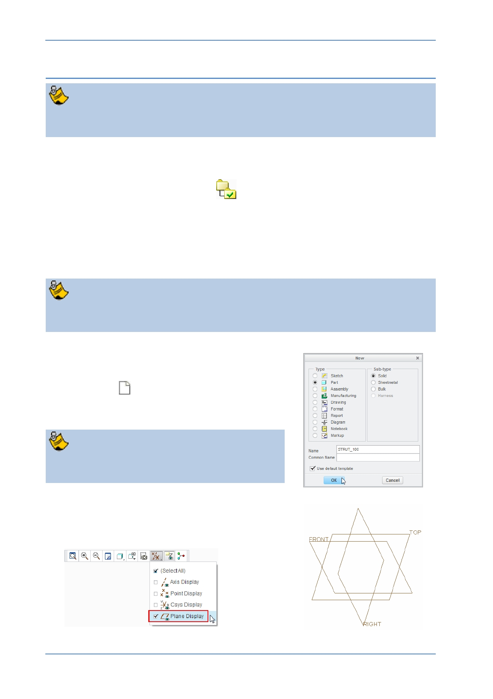

PTC Academic Program
Step 1: Set working directory and create a new part.
If you just completed Module 1 and have not exited from Creo Parametric, you
should skip tasks 1 and 2.
1. Start Creo Parametric.
2. Setting the working directory:
Click Select Working Directory
from the Data group of the Home tab.
In the Select Working Directory dialog box, browse into the folder where you
saved the Corner Cube model.
After you have browsed into the working directory folder, click OK to set that
folder as your working directory.
The Strut part you create will be saved to and opened from this “working
directory”, the sam e folder where your Corner Cube was saved.
3. Creating the new strut part model:
From the Quick Access toolbar or Home tab,
click New
.
Type STRUT_100 in the Name field and click
OK .
You cannot use spaces in filenames so use
underscores or hyphens instead.
4. Changing the display of datum features:
In the Graphics toolbar, disable the display of
all datum features except datum planes
© 2012 PTC
Creo Parametric 2.0 Primer
Page 45